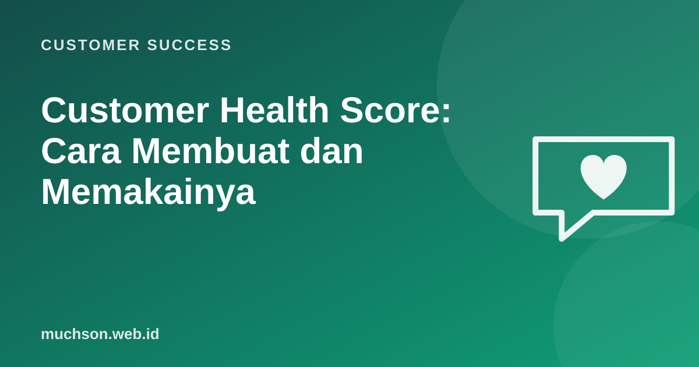

Beranda › Artikel › Customer Success
Customer SuccessCustomer Health Score: Cara Membuat dan Memakainya
Customer Success Manager yang memegang 80 akun tidak bisa menelepon semuanya setiap minggu. Health score adalah cara merangkum banyak sinyal menjadi satu indikator: akun mana yang sehat, mana yang perlu perhatian, dan mana yang dalam bahaya. Ini salah satu latihan inti di modul Retention Lab yang saya ajarkan.

Sinyal yang biasa dipakai
| Kategori | Contoh indikator |
|---|---|
| Pemakaian | Login aktif per minggu, fitur inti dipakai, jumlah pengguna aktif dibanding lisensi |
| Hasil | Target pelanggan tercapai, ROI yang dilaporkan |
| Hubungan | Ada champion aktif, kehadiran di QBR, respons email |
| Dukungan | Jumlah tiket, tiket kritis terbuka, sentimen tiket |
| Sikap | NPS atau CSAT terakhir |
| Komersial | Pembayaran tepat waktu, mendekati tanggal perpanjangan |
Membangun skor sederhana
- Pilih 4-6 indikator yang tersedia datanya dan masuk akal terkait churn.
- Ubah setiap indikator ke skala 0-100.
- Beri bobot sesuai pentingnya.
- Jumlahkan menjadi skor 0-100 dan tentukan ambang warna.
- Validasi: apakah akun yang dulu churn memang punya skor rendah beberapa bulan sebelumnya?
Tindak lanjut tiap warna
Kesalahan umum
- Terlalu banyak indikator sehingga tidak ada yang tahu kenapa skor berubah.
- Bobot berdasarkan perasaan tanpa pernah dicek dengan data churn sebelumnya.
- Skor dilihat tetapi tidak ada tindakan yang disepakati per kategori.
- Mengabaikan konteks: pemakaian turun saat libur akhir tahun adalah hal biasa.
- Hanya data kuantitatif: tambahkan penilaian CSM (sentimen) sebagai satu indikator.
Perhatikan arah
Tren lebih penting dari angka sesaat. Akun dengan skor 72 yang turun dari 90 dalam sebulan mungkin lebih mengkhawatirkan daripada akun yang stabil di 60.
Tanya jawab
Apakah perlu software khusus?
Tidak untuk memulai. Spreadsheet dengan data dari aplikasi dan CRM sudah cukup. Platform customer success membantu saat jumlah akun dan sumber data bertambah.
Seberapa sering skor diperbarui?
Mingguan cukup untuk sebagian besar bisnis B2B. Untuk produk konsumen dengan banyak pengguna, bisa harian dan otomatis.
Bisakah memakai machine learning?
Bisa bila data churn historis cukup banyak. Mulailah dengan skor sederhana yang mudah dijelaskan, lalu bandingkan.
Sumber dan bacaan lanjut
- Amy Gallo (2014): The Value of Keeping the Right Customers, Harvard Business Review
- Customer success adalah (artikel terkait)
- Sinyal pelanggan akan pergi (artikel terkait)
- Metrik UX dengan framework HEART (artikel terkait)